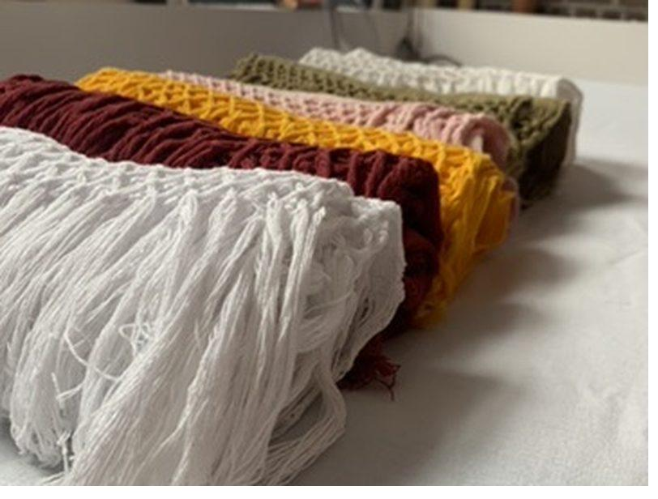
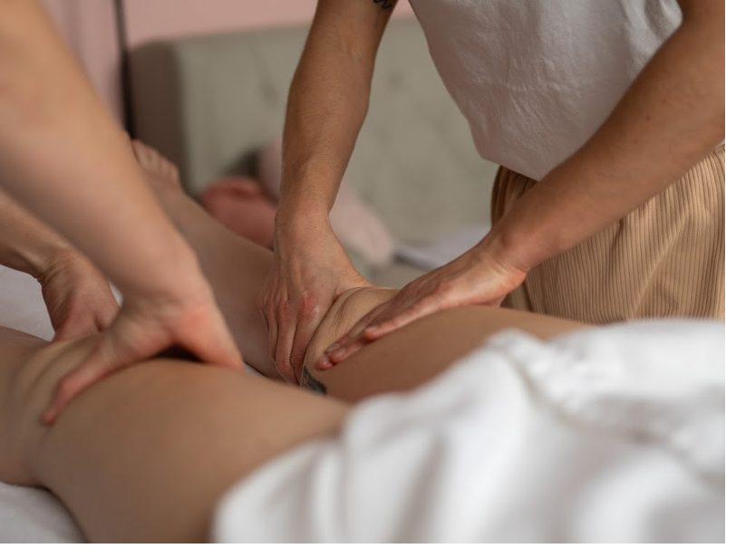
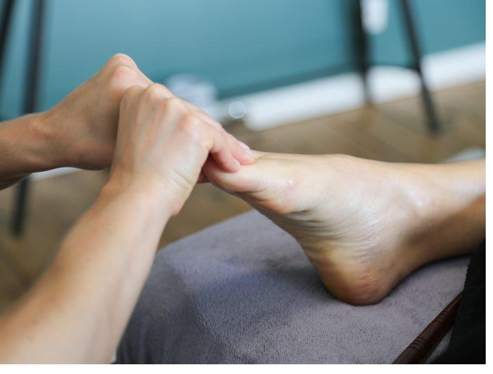
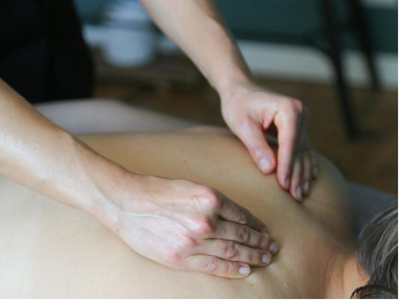
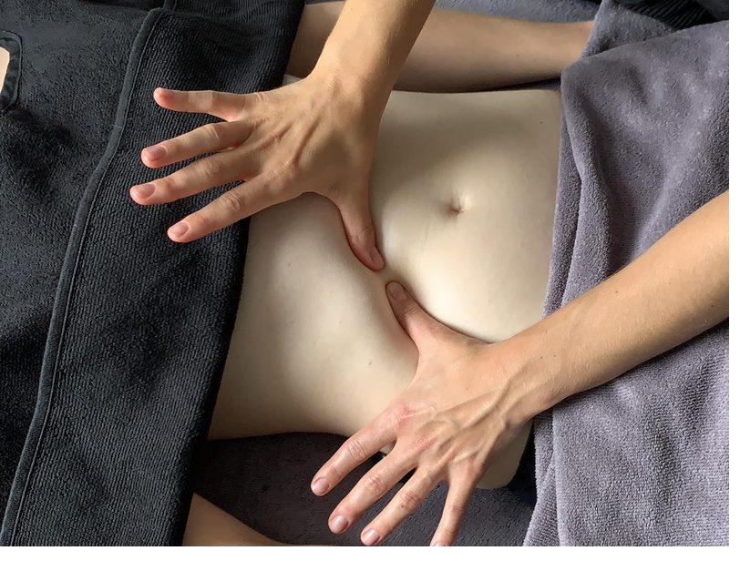
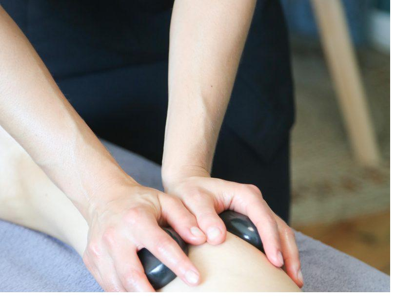

Rituel d'exception - 300 €Le Rituel Rebozo
Entre 2h30 et 3h, à 4 mains (2 praticiennes)
Tendre rituel ancestral en plusieurs étapes, offert aux femmes qui souhaitent se retrouver et se recentrer. Traditionnellement postnatal, il est ouvert à toute femme en quête de paix et de réconfort.

Expérience sensorielle - 160 €Le Massage Tibétain aux 4 Mains
60 min, 2 praticiens
Quatre mains qui pétrissent et enveloppent votre corps, plongé dans un bain sonore et vibratoire tibétain. Une expérience rare, riche en sensations auditives et tactiles, qui transporte et rééquilibre.

Détente cibléeL'Étoile
60 à 90 min
Crâne, visage, mains et pieds : les cinq extrémités du corps, les plus riches en terminaisons nerveuses, sont stimulées pour une détente profonde là où vous êtes le plus sensible.

L'anti-tensionsLe Dos
30, 45 ou 60 min
Pressions shiatsu, travail manuel appuyé, pierres chaudes ou bambous : un soin du dos entièrement sur-mesure pour apaiser les tensions accumulées sur cette zone si sollicitée.

Digestion & émotionsLe Ventre Holistique
45 min - séance unique ou pack
Un travail complet de notre « deuxième cerveau », souvent tiraillé par les maux du quotidien. Réapprenez à respirer, réapprivoisez votre système digestif, détendez-vous autrement.

D'octobre à mi-avrilLes Pierres Chaudes
60 min
LE massage relaxant par excellence : la chaleur diffuse des pierres, apposées puis en mouvement, procure une détente intense. La parenthèse idéale des saisons froides.
Une zone qui vous fait souffrir au quotidien ?
Décrivez-moi vos tensions : je vous oriente vers le soin ciblé le plus efficace, ou je compose un protocole sur-mesure.
Demander conseil 06 74 25 25 54